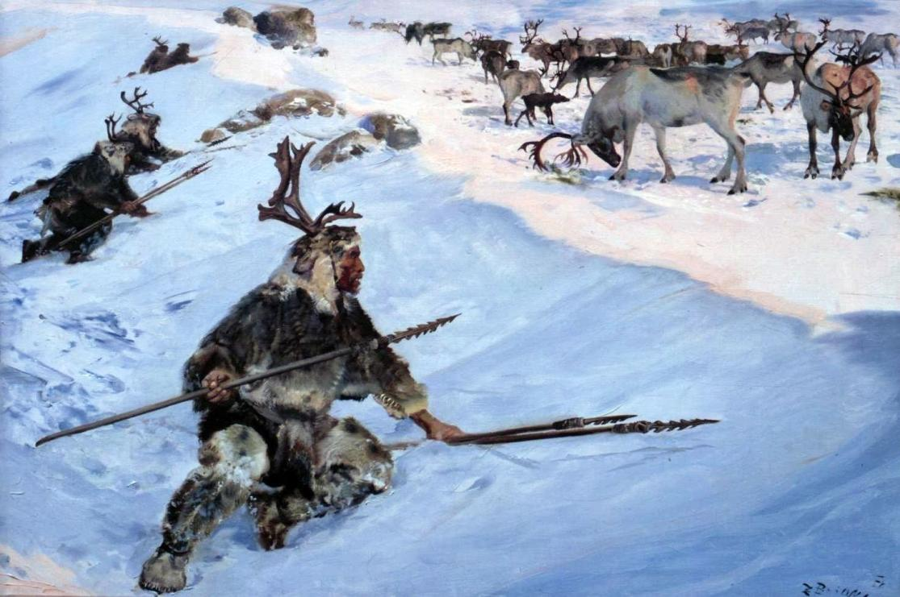
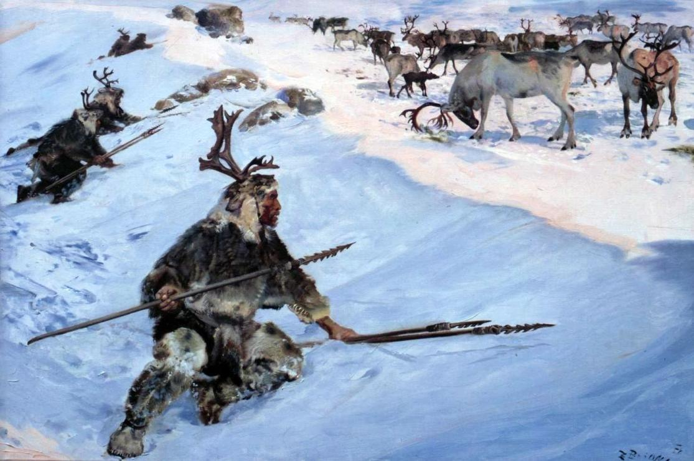
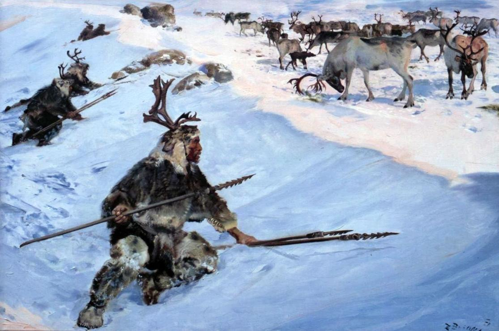

Huddled around fires in frozen caves, the Bear-men are widely regarded as a barbarous group by more "civilised" peoples. These accusations are not entirely without merit, as it is common for Bear-man raiding parties to wreak havoc in surrounding lands when supplies run low. It is said that the Mother Bear Arhitut, a widely worshipped goddess among the tribes, forced their ancestors into the high mountains as a punishment for some ancient sin. Bear-man shamans work to fight the spirits of fire and frost sent in the summers and winters, performing cultic rites and sacrifices for their many tribal gods.

Bear-men often wear the skins of the beasts they hunt. They believe that by wearing their pelt, some of that beast's characteristics are transferred onto themselves. Alongside the cultic reasoning, it acts as a form of camouflage while hunting.
Mammoth herds have been slowly decreasing in number over the past few generations. As such, mammoth hunters are held in high regard. The tusks and skins are usually gifted to elders and shamans or taken by great warriors and hunters.
Alamut was a Bear-man of great renown, the chief of Ukho. He led a band of hunters and raiders into the heart of the riverlands of the Palatials. They laid waste to their cities and, perhaps more importantly, brought the art of metallurgy to the Bear-men. Alamut's axe was taken from the workshop of the king of Idir, a northern Palatial city-state. Ukhite chiefs continue to use the axe as a symbol of their legitimacy.